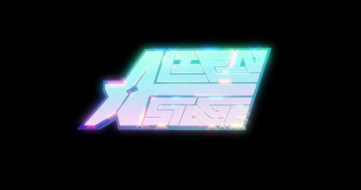
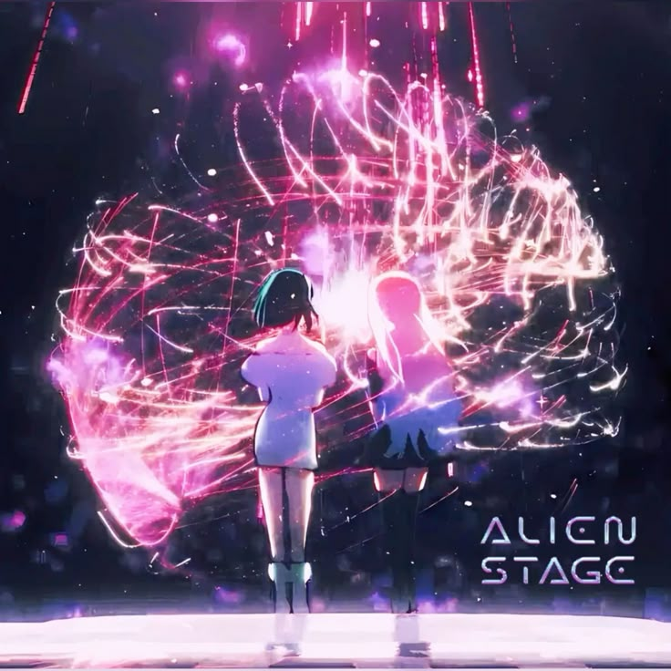
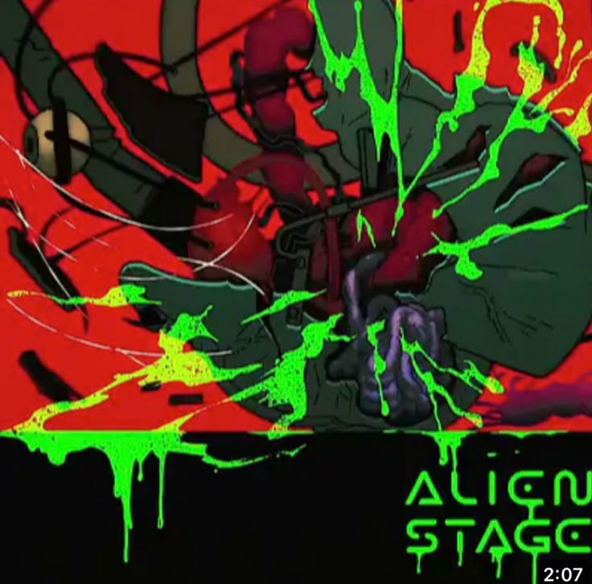
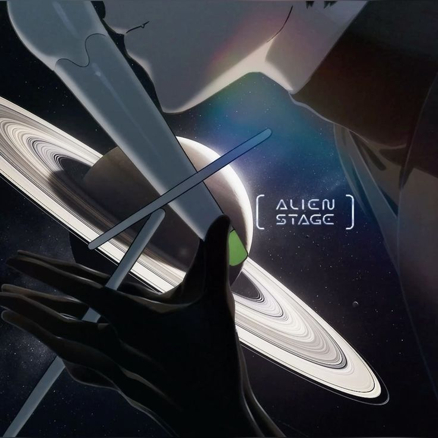
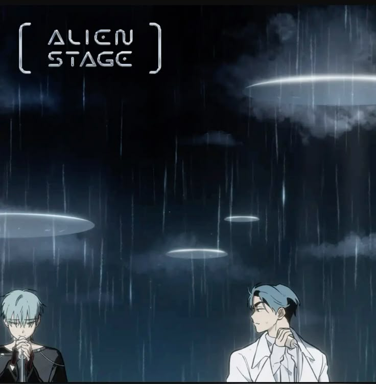
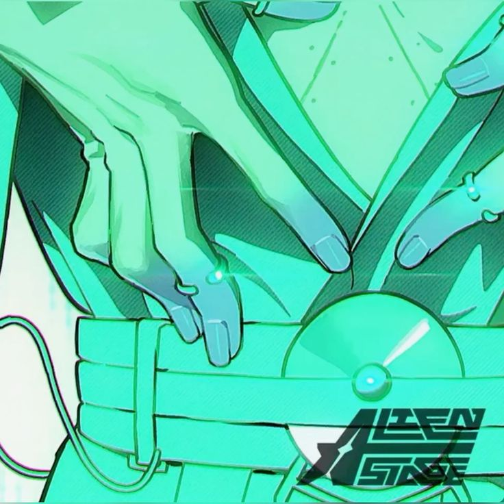
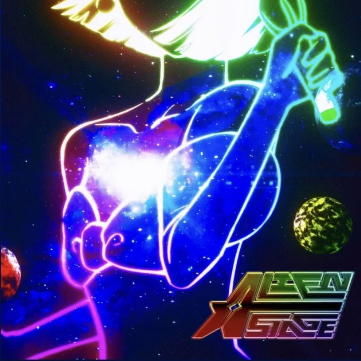
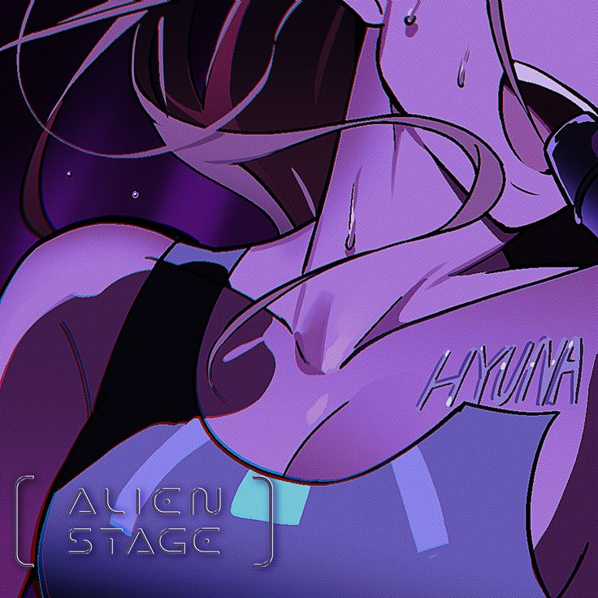
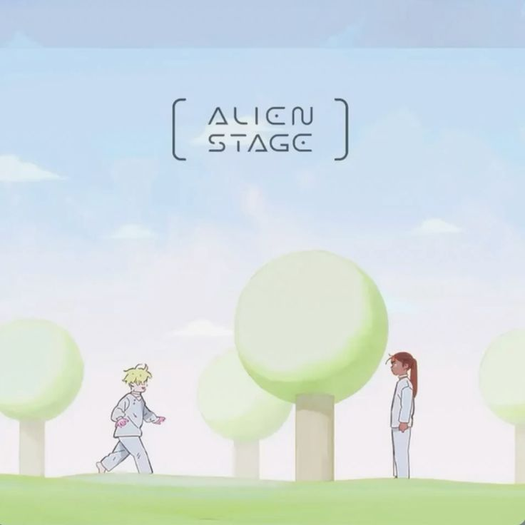

Rounds
Round 1

"MY CLEMATIS" (나의 클레마티스) is an original song featured in 'Alien Stage OST Part.1' composed by Team JL and performed by Rubyeye and C!naH - the voices of Mizi and Sua respectively. The song was first introduced in ROUND 1 on September 7th, 2022.
Round 2

"Unknown (Till The End...)" is an original song featured in 'Alien Stage OST Part.3' composed by XENO VIBE & BL8M and sung by AKUGETSU, the voice of Till. The song was first introduced on October 10th, 2022 with the release of Round 2.
Round 3

"Black Sorrow" is an original song featured in 'Alien Stage OST Part.4' sung by PARK BYEONG HOON, the voice of Ivan. The song was first introduced on January 5th, 2023 with the release of ROUND 3.
Round 5

"Ruler Of My Heart" is an original song featured in Alien Stage sung by BL8M and Rubyeye - the voices of Luka and Mizi, respectively. The song was first introduced on April 28th, 2023 with the release of ROUND 5.
Round 6

"Cure" is an original song featured in Alien Stage performed by AKUGETSU and PARK BYEONG HOON - the voices of Till and Ivan, respectively. The song was first introduced alongside the release of ROUND 6 on April 5th, 2024.
Final Round

"Blink Gone" is an original song featured in Alien Stage performed by AKUGETSU and BL8M - the voices of Till and Luka, respectively. The song and episode were released simultaneously on October 25th, 2024 for the release of the Final Round.
Other songs
Sweet dream

"Sweet Dream" is an original song featured in 'Alien Stage OST Part.2' composed by XENO VIBE & BL8M and sung by C!naH, the voice of Sua. The song was first introduced on September 20th, 2022, along with the release of the Prologue.
All in

"All-in" is an original song featured in the Alien Stage OST produced by STUDIO LICO and sung by 6FU;. the voice of Hyuna. It was released on December 29th, 2023.
Wiege
